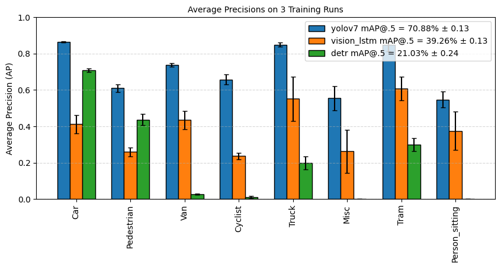
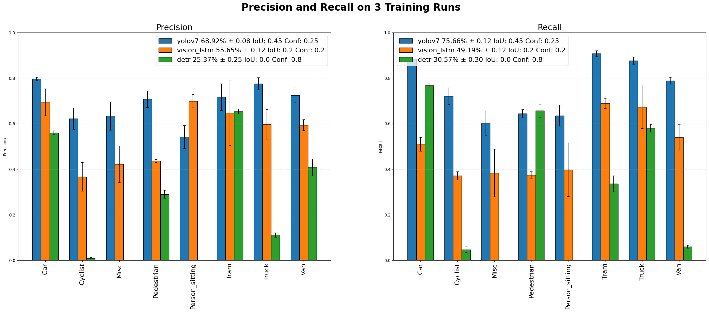
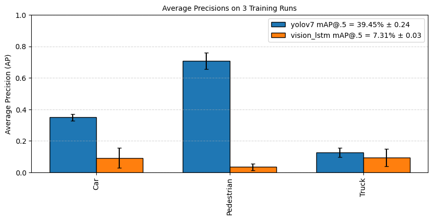
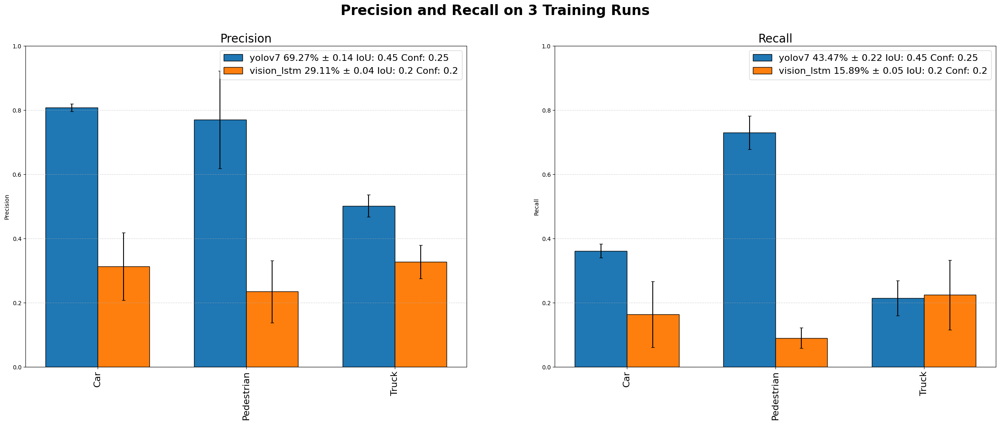
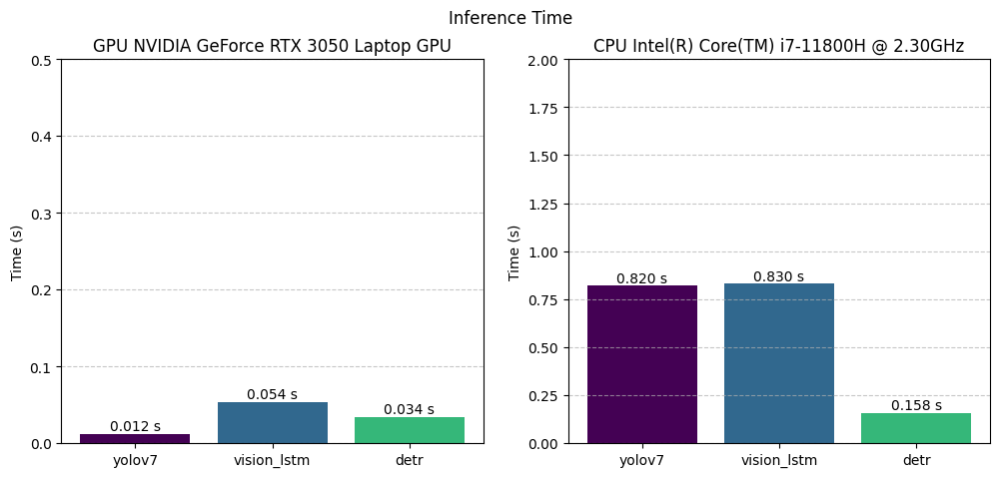
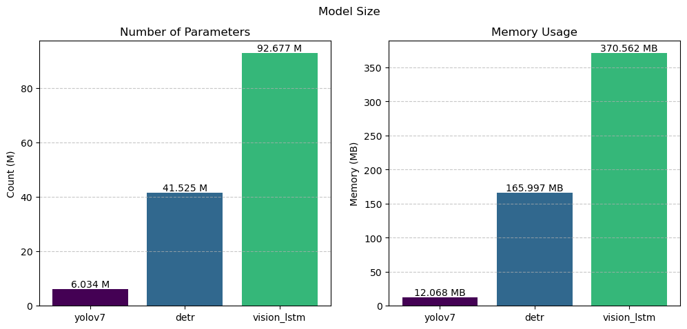
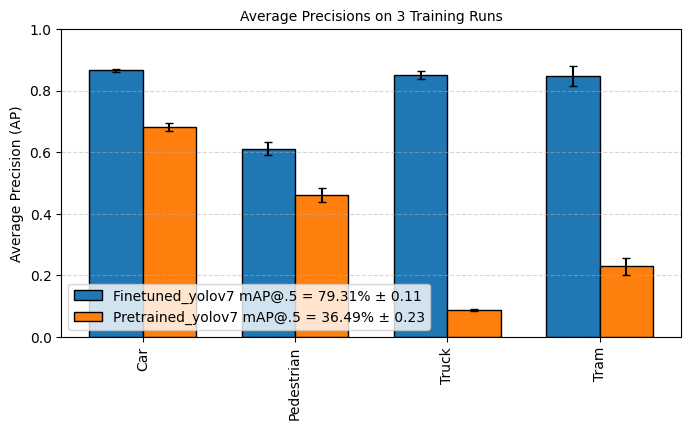
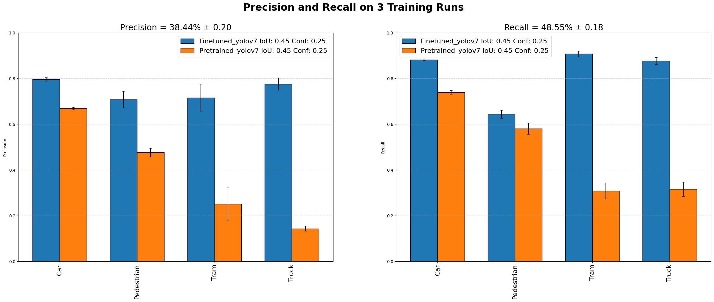

Train YOLOv7-Tiny for mobile robot in traffic scenarios under varying environmental conditions. The model is trained on the KITTI dataset, which is a widely used benchmark dataset for autonomous driving and object detection tasks. The evaluation of the model is performed on a custom dataset generated from this project, which simulates the specific environment and conditions encountered by mobile robots, including varying lighting and weather conditions. The evaluation focused on assessing the model's performance in terms of accuracy, inference speed, and robustness under varying environmental conditions. YOLOv7-Tiny will be benchmarked against DETR and Vision LSTM, which developed by other students in the same course project.
YOLOv7-Tiny was benchmarked against Vision LSTM and DETR, both developed by other students in the same course project, averaged over 3 training runs.
| Model | mAP@.5 | Precision | Recall |
|---|---|---|---|
| YOLOv7-Tiny | 70.88% ± 0.13 | 68.92% ± 0.08 | 75.66% ± 0.12 |
| Vision LSTM | 39.26% ± 0.13 | 55.65% ± 0.12 | 49.19% ± 0.12 |
| DETR | 21.03% ± 0.24 | 25.37% ± 0.25 | 30.57% ± 0.30 |


Accuracy dropped considerably when transferring to the custom dataset generated in the simulation-based evaluation project, reflecting the domain gap between KITTI's real-world driving scenes and the simulated mobile-robot environment.
| Model | mAP@.5 | Precision | Recall |
|---|---|---|---|
| YOLOv7-Tiny | 39.45% ± 0.24 | 69.27% ± 0.14 | 43.47% ± 0.22 |
| Vision LSTM | 7.31% ± 0.03 | 29.11% ± 0.04 | 15.89% ± 0.05 |


YOLOv7-Tiny was also by far the most efficient model, making it the only candidate suitable for real-time inference on robot-grade hardware.
| Model | GPU (RTX 3050 Laptop) | CPU (i7-11800H) | Parameters | Memory |
|---|---|---|---|---|
| YOLOv7-Tiny | 0.012 s | 0.820 s | 6.03 M | 12.07 MB |
| Vision LSTM | 0.054 s | 0.830 s | 92.68 M | 370.56 MB |
| DETR | 0.034 s | 0.158 s | 41.53 M | 166.00 MB |


Overall, YOLOv7-Tiny achieved the best trade-off between accuracy and efficiency, outperforming Vision LSTM and DETR on KITTI while using roughly 7–15x fewer parameters and running up to 4.5x faster on GPU, making it the most practical choice for onboard deployment on a mobile robot.
To isolate the effect of fine-tuning, the COCO-pretrained YOLOv7-Tiny weights were compared directly against the KITTI-finetuned weights on the 4 classes common to both datasets (Car, Pedestrian, Truck, Tram).
| Weights | mAP@.5 |
|---|---|
| Finetuned on KITTI | 79.31% ± 0.11 |
| Pretrained on COCO only | 36.49% ± 0.23 |


Fine-tuning on KITTI more than doubled mAP@.5 (36.49% → 79.31%) and improved precision and recall across all 4 shared classes, with the largest gains on Truck and Tram — classes that are underrepresented or defined differently in COCO — confirming that fine-tuning on domain-specific data was essential rather than relying on COCO-pretrained weights alone.